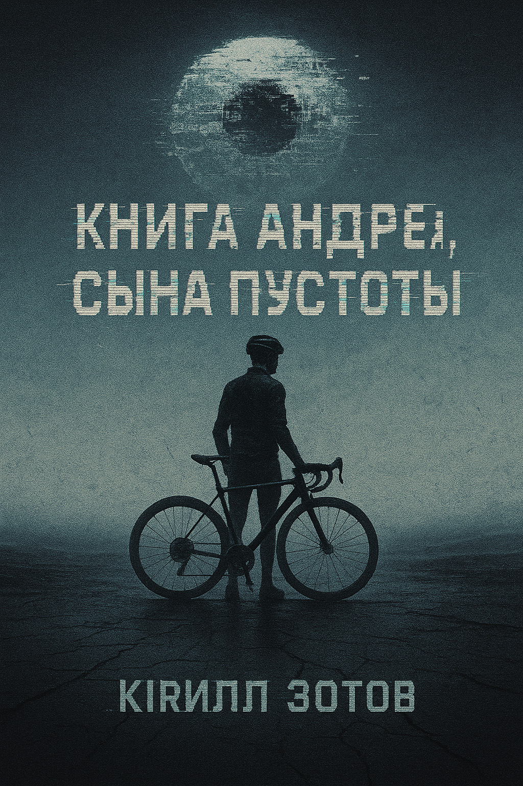

Тьма следит, экран мерцает, а пустота зовёт. Андрей шагает, но куда?
Книга Андрея, сына Пустоты — психологическая драма о молодом человеке из Перми, чья жизнь тонет в рутине офисных дней, цифровой зависимости и тенях прошлого. Андрей — не герой, а обычный мужчина, чьи будни в сером офисе становятся метафорой внутренней борьбы. Экран телефона — его цепь, воспоминания о материнской хватке — груз, а вопросы о смысле жизни — тихий шёпот в пустоте. Сюрреальные образы, такие как зрачок-шприц или чёрная река, размывают реальность, затягивая в цифровой капкан. В конце пути ждёт скрытая глава — лабиринт подсознания, где Андрей сталкивается с голосом, который не отпускает. Сможешь ли ты пройти его путь, услышать тишину его души и найти свет в бездне? Эта история — вызов: столкнись с собственной тьмой.
Предупреждение: История затрагивает темы эмоционального насилия, травмы и созависимости. Если эти темы вызывают дискомфорт, позаботьтесь о себе — сделайте паузу или обсудите чувства с близким человеком после чтения.
Для погружения в историю Андрея, сына Пустоты попробуйте:
Перед началом
- Настрой: История нелинейна — позвольте одиночеству, травмам и цифровой тьме вести вас.
- Атмосфера: Попробуйте меланхоличный или тревожный настрой.
- Время: Ночь и мягкий свет (лампа, свеча) могут усилить ощущение.
- Звук: Минималистичный эмбиент (Hildur Guðnadóttir, Ben Frost) или звуки природы, такие как шум дождя или ветра.
- Пространство: Уберите отвлекающие гаджеты, дайте тишине шанс.
В процессе
- Ритм: Дышите в такт истории. Замедляйтесь на описаниях природы, где лес и река шепчут об одиночестве. Вчитывайтесь в язвительные сообщения «Гравий-Вилдада» — они бьют, как уведомления. Задержитесь на флэшбеках и галлюцинациях, где голос матери душит Андрея. Ловите его внутренние вопросы («Куда ты гонишь?»), повторяющиеся, как пульс. Чувствуйте, как рвётся ритм между гонкой и тишиной, особенно в скрытой главе. Пауза после её туннеля обязательна — дайте образам осесть.
- Образы: Обращайте внимание на «цепь», «пустоту», «Стрекозу».
- Взаимодействие: Попробуйте записать цитаты или представить «зрачок-шприц», «ртутный нерв».
- Цифровой слой: Перечитайте сообщения Гравий-Вилдада — они скрывают подтекст о вине и контроле.
Скрытая глава
- Откройте её в тишине после основного текста.
- Это интенсивный лабиринт подсознания — делайте паузы, чтобы осмыслить эмоции.
- Блокнот под рукой поможет записать мысли или чувства, вызванные её голосом.
После чтения
- Дайте себе время осмыслить историю. Прогулка, разговор или дневник помогут обработать эмоции.
- Если чувствуете тяжесть, попробуйте заземляющие практики: глубокое дыхание или тёплый чай.

Погрузись в тьму. Читай сейчас. Куда ведут твои шаги?